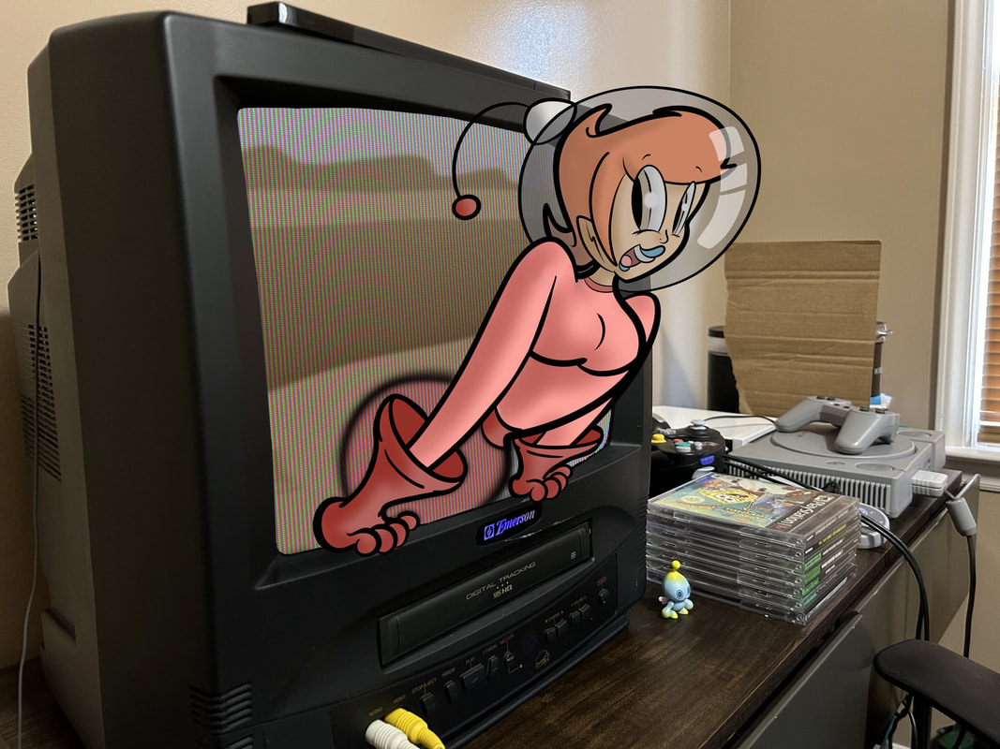

Brendan Haugh
Portfolio Site
About Me!
Hello, My name is Brendan Haugh and I'm a graphic design student at Wake Tech. I dabble in Adobe programs, illustration, photography, web design, and more! Thanks for stopping by!

Illustrations
I love to produce cartoon illustrations with bright color palletes and exaggerated features! You can find a link to my gallery by clicking the button next to this box.

Photography
I dabble in photography with my Canon brand camera. I like to take photos of landscapes, people, toys, and nature. I hope yopu enjoy my photography gallery!

Graphic Design
I've been a student at Wake Tech in the Graphic Design program for a bit now. Below are some image samples of projects I've worked on. I ghopy you choose to checkout my gallery for them by clicking the button to the right.